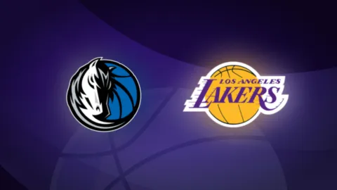

Dự đoán kết quả, nhận định tỷ số Los Angeles Lakers vs Dallas Mavericks NBA 08h30 ngày 25/01

Los Angeles Lakers sẽ có chuyến làm khách đầy khó khăn trước Dallas Mavericks vào lúc 08h30 ngày 25/01 (giờ Việt Nam). Trong 1 năm trở lại đây, cuộc đối đầu này đã trở thành tâm điểm sau thương vụ trao đổi Luka Doncic. Dù người đứng sau thương vụ này là Nico Harrison đã bị sa thải, thì dấu ấn của ông vẫn còn hiện diện ở Dallas Mavericks.
Thương vụ này giúp Dallas Mavericks có được lựa chọn Pick 1 tại NBA Draft 2025. Họ dùng quyền này để lấy về Cooper Flagg, 1 trong những tân binh tiềm năng lớn nhất tại NBA trong những năm gần đây. Tuy nhiên, chấn thương của các trụ cột trong mùa 2025/26 đã ảnh hưởng khá nhiều đến thành tích của Dallas Mavericks.
Ở bên kia chiến tuyến, Los Angeles Lakers cũng thi đấu không thật sự ổn định trong khoảng 1 tháng đổ lại. HLV trưởng JJ Redick cũng không giấu được sự thất vọng trước màn trình diễn cũng như tinh thần thi đấu của các học trò.
Lakers vs Mavericks diễn ra khi nào, ở đâu>
- Ngày: 25/01/2026
- Giờ: 08h30
- Nhà thi đấu: American Airlines Center
Những điểm nhấn trong trận đấu NBA Lakers vs Mavericks 25/01
Một trong những điểm yếu lớn của Lakers nằm ở khả năng phòng ngự chuyển trạng thái, và Mavericks lại cực kỳ lợi hại ở khía cạnh này. Tính đến trước ngày 22/01/2026, Mavericks là đội đứng thứ 4 toàn giải đấu về hiệu suất ghi điểm từ các pha phản công nhanh, và tổng điểm họ ghi được từ các pha bóng này đứng thứ 2 toàn NBA. Khả năng lùi về phòng ngự của Lakers sẽ bị thử thách rất lớn trong trận đấu này.
Phần lớn các thất bại của Lakers trong mùa 2025/26 đều đến từ khả năng phòng ngự yếu kém. Họ đứng thứ 27/30 về tỷ lệ ghi điểm của đối thủ, đồng thời để lọt điểm số trung bình cao thứ 19 toàn NBA. Dù vậy, Lakers có thể hy vọng khi Mavericks không phải là đội tấn công nửa sân quá xuất sắc khi thiếu vắng nhiều cầu thủ quan trọng. Tính tổng thể, Dallas Mavericks hiện chỉ đứng thứ 23/30 đội về số điểm trung bình mỗi trận.
Thông tin chấn thương trước trận Lakers vs Mavericks
Tình trạng sức khỏe của các cầu thủ sẽ ảnh hưởng rất lớn đến cục diện trận đấu, khi cả Mavericks lẫn Lakers đều đang đối mặt với những vấn đề nhân sự đáng kể trước cuộc đối đầu này.
Danh sách chấn thương của Dallas Mavericks:
- Anthony Davis: Nghỉ thi đấu - dự kiến trở lại ngày 01/03
- Kyrie Irving: Nghỉ thi đấu - dự kiến trở lại ngày 12/02
- Dereck Lively II: Nghỉ hết mùa
Mavericks bước vào trận gặp Lakers với danh sách chấn thương khá dài. 3 cái tên kể trên chắc chắn vắng mặt và đều là những trụ cột quan trọng. Tuy nhiên, P.J. Washington, D’Angelo Russell và Daniel Gafford nhiều khả năng sẽ kịp góp mặt trong trận đấu này.
Danh sách chấn thương của Los Angeles Lakers:
- Austin Reaves: Nghỉ thi đấu - dự kiến trở lại ngày 26/01
- Adou Thiero: Nghỉ thi đấu - dự kiến trở lại ngày 02/02
Kể từ khi Reaves dính chấn thương vào ngày Giáng sinh, Lakers chỉ thắng 6 trong tổng số 13 trận. Đây là tổn thất lớn cho Lakers bởi Austin Reaves là mắt xích khá quan trọng trên mặt trận tấn công.
Dự đoán kết quả NBA Lakers vs Mavericks 25/01
Nếu Dallas có thể kiểm soát nhịp độ trận đấu, họ hoàn toàn có cơ hội giữ thế trận cân bằng hơn nhiều so với dự đoán của số đông.
Trong khi đó, Lakers có khả năng đánh nửa sân tốt hơn hẳn khi sở hữu Luka Doncic, và việc làm chậm nhịp độ trận đấu là kịch bản mà họ ưa thích. Tuy nhiên, khả năng phản công nhanh của đội bóng này lại khá hạn chế. Họ chỉ đứng thứ 19 về hiệu suất ghi điểm phản công và thứ 22 về điểm số ghi được từ những tình huống này.

Đây sẽ là cuộc đối đầu giữa 2 phong cách tấn công đối lập, đội nào buộc đối phương phải chơi theo nhịp của mình sẽ có cơ hội chiến thắng rõ rệt. Lakers đơn giản là sở hữu nhiều tài năng và những cầu thủ có khả năng tạo đột biến hơn, vì vậy lợi thế chung cuộc vẫn nghiêng về họ. Dù vậy, Mavericks hoàn toàn có thể giữ trận đấu trong tầm tay bằng cách tận dụng tốc độ và khả năng chạy liên tục để gây áp lực lên Lakers, đội bóng có tuổi đời trung bình già nhất NBA và luôn có vấn đề về thể lực.
Cooper Flagg trở nên nguy hiểm nhất khi có không gian để chạy phản công và tấn công trực diện. Tài năng trẻ này sẽ là thứ vũ khí mà Dallas Mavericks có thể trông cậy khi chạm trán Lakers.
Dự đoán:Mavericks thắng cách biệt dưới 5 điểm.